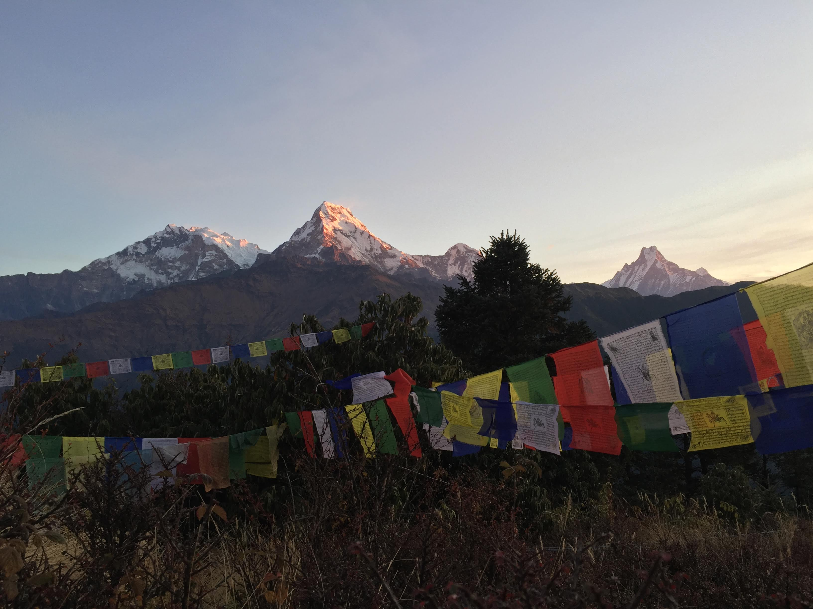
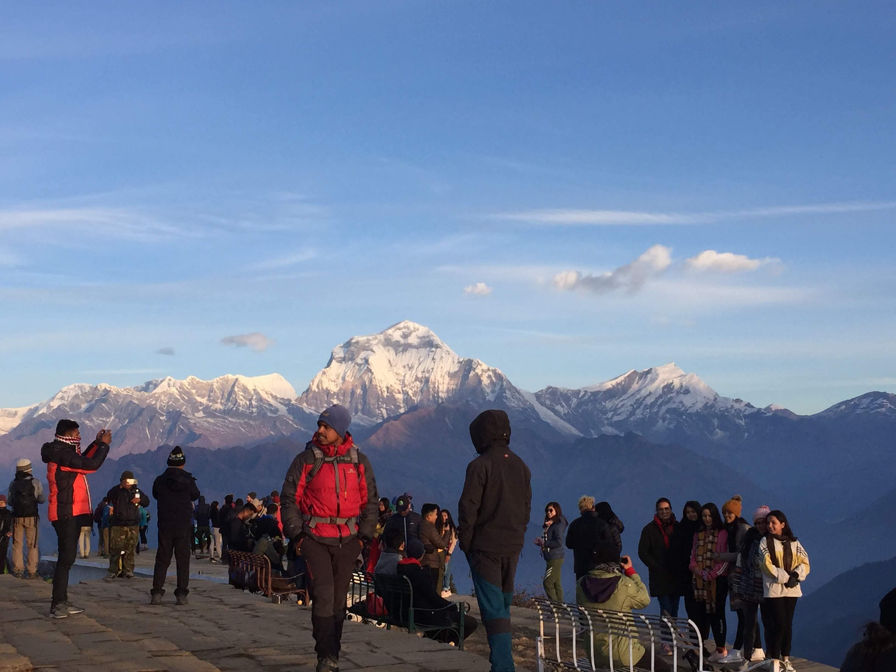
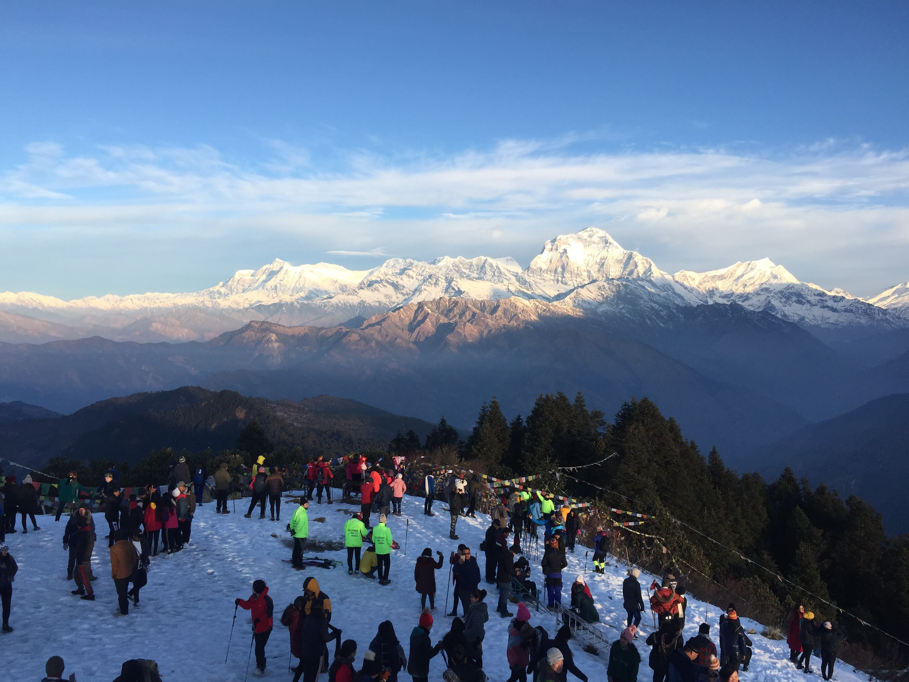
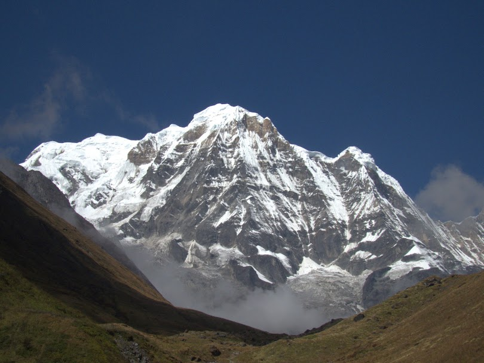
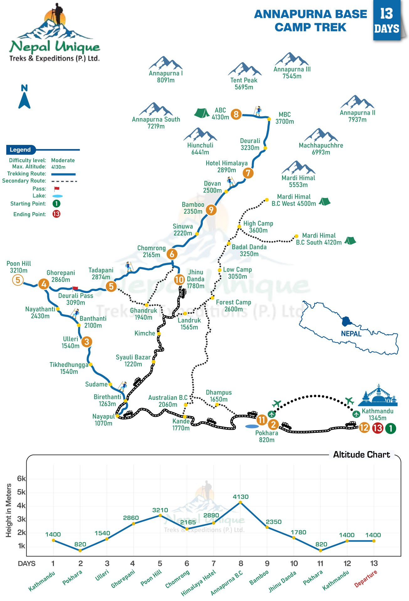

Annapurna Base Camp Trek
Explore the Annapurna Base Camp Trek, a world-renowned trekking destination in Nepal, that offers a breathtaking journey through lush forests, traditional villages, and Himalayan landscapes. 13-day itinerary and cost are provided for 2026/2027.





Key Trip Facts
Trek Overview
Trip Highlights
Annapurna Base Camp Trek Overview
Explore the Annapurna Base Camp Trek, a world-renowned trekking destination in Nepal, that offers a breathtaking journey through lush forests, traditional villages, and Himalayan landscapes. 13-day itinerary and cost are provided for 2026/2027. The Nepal Unique Treks offers detailed itineraries, costs, and essential trek information. Imagine trekking to an altitude of 4,130 meters above sea level. It is a journey that takes you into the core wilderness of the Himalayas, the alpine meadows, and some charming settlements. This 13-day Annapurna Base Camp Trek with Nepal Unique Treks and Expeditions is a perfect way to learn about the Himalayas, their people, and their culture. All that while breathing in the cool and fresh Himalayan oxygen.
Did you know that a lot of trekking enthusiasts and mountain lovers choose the Annapurna Base Camp Trek route as their favorite? So what makes this trail so lovable and preferable? Maybe the fact that the trekkers get the closest views of some massive mountains, including Annapurna Massif, Dhaulagiri, Machhapuchhre, and Manaslu. Yes, these are just a few of the mountains that you can gaze into during the trek to Annapurna Base Camp with Poon Hill Trek.
What more does the ABC Trekking trail have to offer the trekkers? Well, imagine stopping by some traditionally settled, beautiful Gurung and Magar villages. Our journey begins with a scenic drive for two days. After that, the trekkers go for real adventure: a walk to the base camp of the 10th-highest peak in the world, Mt. Annapurna (8,091 meters). During the trek, the trekkers will also ascend one of the best viewpoints of Pokhara, the Poonhill Viewpoint. Moreover, the trail also takes us inside the Annapurna Conservation Area, home to a wide variety of flora and fauna.
Just book the Annapurna Base Camp Trekking package and give yourself a chance to immerse yourself deep into the natural beauty and cultural importance of this region. Also, you will have so much more to learn, so much to understand, and so much to experience while on this trek.
ABC with Nepal Unique Treks: Best Experience Ensured
The trek to Annapurna Base Camp stands as one of the most adventurous and adrenaline-rushing journeys in the Himalayas of Nepal. Whether you are a seasoned trekker or a casual trekking enthusiast, this trekking route offers the best experience. However, going for such a high-altitude trek also requires proper preparation, but more than that, you will require assistance from the best-in-the-business trekking agency. Do you know which trekking agency it could be? Well, certainly none other than Nepal Unique Treks.
Let us take you through some of the significant advantages of choosing Nepal Unique Treks for the Annapurna Base Camp:
- Nepal Unique Treks has been serving trekkers and travelers for more than 20 years. This makes us well-known about every nook and corner of the ABC trail.
- We have a team of highly enthusiastic, experienced, seasoned, young, and energetic trekking guides and porters with valid licenses.
- The Nepal Unique Treks makes sure to arrange one of the most adventurous, insightful, and exciting treks to the Annapurna Base Camp.
- Our team dedicates itself to ensuring the proper arrangement of food, accommodation, and transportation facilities throughout the trek.
- With our assistance, you can learn so much about the culture, tradition, and lifestyle of the remote area of Neal.
- We also take proper care of your health and safety, as our guides also take a first aid kit with them. With that, they can help you with minor health assistance.
- Nepal Unique Treks & Expeditions also provides trip customization and cancellation options. However, Terms and conditions will be applied.
Annapurna Base Camp Trek Permit Requirements
Do you know that participating in any trekking packages requires the trekkers to obtain some special permits? These permits are required by the government and trekking authorities to keep your details and for many other internal reasons. So, what permits do we need for the 13-day Annapurna Base Camp Trek? You only need to obtain two permits, and they are:
- Trekkers Information Management System (TIMS) and
- Annapurna Conservation Area Project Entry Permit
With these two permits, not even a single person can stop you from going on the Annapurna Base Camp adventure. Also, do you want to learn something interesting and useful? The representatives from Nepal Unique Treks make arrangements for both of these permits once you book the package, and we get the required documents from you. This means that all you need to do is come to Nepal and go for the trek.
Travel Insurance: Do We Need That for the Annapurna Base Camp Trek?
Enthusiasm is something that makes people forget the most important things at times. We completely understand your excitement and enthusiasm to go on the Annapurna Base Camp Trek. However, we also request you remember one of the most important things while preparing for this trip, Travel Insurance.
Being one of the most adventurous and adrenaline-rushing trekking routes in the Himalayas, several sections of this trail certainly are difficult. Furthermore, you might also come across different natural as well as unexpected problems. In such scenarios, travel insurance comes to the rescue, saving you from the financial burden that follows.
What are the advantages? Check these out:
The travel insurance covers the expenses that you incur during an emergency evacuation. These evacuations are needed in case of serious illness during the trek.
With travel insurance, you can expect financial assistance during medical treatments, hospital stays, and even for medications.
- You can also save yourself from spending a hefty amount of money during sudden or last-minute cancellations of the trek.
- This insurance also compensates for lost, delayed, or damaged trekking gear and baggage.
- Covers expenses from flight delays and cancellations.
- You can expect to be financially assisted or protected against accidental damage or theft.
Annapurna Base Camp Trek Cost 2026
Now that we have taken you through the overview and a couple of requirements of the Annapurna Base Camp Trekking package, you would certainly want to know the package cost. Don't worry at all because Nepal Unique Treks offers the most affordable and reasonable pricing for the Annapurna Base Camp Trek in 2026.
Annapurna Base Camp Trek Itinerary: Day by Day
13 Days program for Annapurna Base Camp Trek. Daily timings and sequences remain flexible according to weather, flight operations, and group pace.
Day 1: Arrival at Tribhuvan International Airport and transfer to the Hotel in Thamel.
Approx. 1,345 m / 4,413 ft
Are you excited to be in the land of the Himalayas, in fact, actually on your way to one of the tallest Himalayas? We believe you are more than excited. The excitement peaks as you enter Nepal's territory and start getting aerial glimpses of the towering Himalayas. As you land at the Tribhuwan International Airport, the representatives from Nepal Unique Treks will receive you. You can see them carrying a placeholder with your name on it. From there, our representatives drive you to the hotel in a private vehicle and the hotel staff welcome you by offering a refreshing welcome drink. After that, you can check in at your room and freshen yourself up. Once that's done, the rest of the day is all yours. If you seek advice from us about what to do in Kathmandu, we recommend you visit some bars and pubs, get some drinks, and try some cuisines. Moreover, you can also find a spa or massage place to reduce all the stress from such a long flight. If needed, you can also visit our office, located in Thamel itself, and talk about our services and packages. However, that is not mandatory because, in the evening, we will have a welcome dinner planned for you. Here, the trekkers can meet our team and get to know the guides. Moreover, we will also provide you with all the documents (permits) that you need for the Annapurna Base Camp Trek along with a quick yet thorough trek briefing from the guides. Well, that's it! After that, you can head back to your room to sleep as we have some real adventure waiting for us from the next day.
Day 2: Drive to Pokhara (820m / 2,690ft) west of the Kathmandu Valley (205/127 miles) 7-8 hours
Approx. 820 m / 2,690 ft
Today, we will start the journey towards the Annapurna region. As you wake up, freshen yourself, and have a fulfilling breakfast in the hotel, our guides pick you up. From there, they will drive you to the bus station in a private vehicle. As you board the flight, our journey to the Annapurna Base Camp begins! The trekkers can also reach Pokhara via flight, which takes about 25 to 30 minutes. In that case, the guides will drive you to the Tribhuwan International Airport from where we fly to the Pokhara International Airport. Remember that, if you take a flight from Kathmandu to Pokhara, this will add to the package cost (USD 120) so you will have to pay a little extra than the regular Annapurna Base Camp Trek package cost. Whichever option you choose to reach Pokhara (by bus or by flight), our local representatives will receive and drive you to the hotel in Pokhara. Check-in at the hotel room before heading out for a stroll in the city of lakes. Pokhara, famous as one of the most beautiful cities in Nepal, offers the best of natural beauty, lifestyle, and cultural significance. You can go to visit the Phewa Lake and the temple in the middle of this lake. Furthermore, you can also check out some caves, including the Mahendra Cave, and Chamero Gufa (Bat Cave). In the evening, you can take your time to spend some amazing time around the lakeside. Believe us when we say that you can experience one of the best nightlife of your life in Pokhara Lakeside. In the evening, please return to the hotel and go for a sound sleep.
Day 3: Drive from Pokhara to Nayapul /Birethanti /Tikhedhunga (1,570m), and Ulleri (1,540m / 5,050ft) 2 hours (Driving) 3-4 hours (Trek) 7km / 4.34miles
Approx. 1,570 m / 5,151 ft
On the third day, we will start trekking on the Annapurna Base Camp Trekking route. However, that's not how the day begins. As you wake up and have breakfast in the hotel, we will first go for a drive from Pokhara to Ulleri via Nayapul, Birethanti. It takes about 3 hours for us to complete this drive and reach the starting point of the 13-Day Annapurna Base Camp Trekking map. As you reach Ulleri Check in the guesthouse and take your time for freshness. Located at an altitude of 1540 meters above sea level, Ulleri is a beautiful and traditional Magar village. Moreover, this village also offers outstanding views of the Annapurna South and Hiunchuli. Not to mention, the locals welcome you with great pleasure and happiness. Moreover, you also start getting the sense of cool breeze coming from the Himalayas. Talking about this section of the trek to Annapurna Base camp, you will find endless stone staircases. Due to that reason, you can also prepare yourself for longer walks at a higher altitude. Just imagine walking through the ancient stone paths, past cascading waterfalls, and through dense forests and quiet villages. Wouldn't that be something best to do on one of the less traveled trekking routes? In the evening, you will reach Ulleri and check in at the hotel. Take your time to stroll around the village and interact with the locals before having dinner and sleeping for the night.
Day 4: Trek from Ulleri (1,540m / 5,050ft) to Ghorepani (2,860m / 9,385ft) 11 km / 6 miles (Trek Distance) 3-4 hours
Approx. 2,856 m / 9,370 ft
On the fourth day, we will have to cover an approximate distance of 11 kilometers, which takes about 3 to 4 hours. This section of the Annapurna Base Camp Trek takes us past the most beautiful and peaceful part of the Annapurna region. What more? Well, in the trek from Ulleri to Ghorepani, you also gain the amazing experience of walking through the rhododendron forests, oak trees, and mass-covered stone steps. You know what? We recommend you go for this trekking adventure in the spring season. Why? Well, because in the spring season, you can witness the forest burst into colors and rhododendrons blossom, making the entire route colorful. Ghorepani, if you do not know, stands as one of the best day hiking destinations in Pokhara. Moreover, this village is also surrounded by tall pine trees and offers outstanding views of some sky-touching Himalayas, including the Dhaulagiri and Annapurna ranges. Take your time to rest for the rest of the evening after a tiring walk. Also, check out some prayer wheels, interact with the locals, and try some locally prepared delicacies before dinner and overnight stay.
Day 5: Early morning hike to Poon Hill viewpoint (3,210m / 10,525 ft), then trek to Tadapani 2,874 meters (9,429 feet) 11.50km / 7.1miles (Trek Distance ) 5 hours
Approx. 2,874 m / 9,429 ft
Visiting the Annapurna Trekking region and not going for a Poonhill viewpoint hike makes no sense at all. So, to add more sense, and a little more adventure and excitement to this trekking journey, we take you on an early morning hike to the Poon Hill Viewpoint. It takes an average trekker about 45 to 1 hour for us to reach the top of Poon Hill Viewpoint. From here, the trekkers can witness one of the best sunrise views. We will spend about 1 or 1.5 hours at the top of Poon Hill before walking further towards Tadapani. Take your time to capture as many photos, and videos, and make as many memories as possible while you stay on Poonhill Viewpoint. Well, while ascending the Poon Hill Viewpoint, remember that you will have to walk through dense rhododendron forests, shaded oak groves, and peaceful mountain trails. Besides, while walking from PoonHill to Tadapani, we get chances to pass through some amazing spots, including the Deurali Pass. This pass, along with the entire PoonHill viewpoint to Tadapani also offers outstanding views of mountains and forests. Take your time to enjoy every peaceful and tranquil bit of the forest up until Tadapani. As you reach Tadapani and check into the hotel, you can freshen up before taking a quick stroll in the area.
Day 6: Trek from Tadapani (2,630m / 8,630ft) to Chomrong (2,165m / 7,105ft) 10km / 6.2miles (Trek Distance) 7 hours
Approx. 2,163 m / 7,096 ft
How is the trek to the Annapurna Base Camp with Nepal Unique Treks going? We believe that the team makes pa erfect arrangement for the trekkers. Being on the sixth day of this trek means that we are just 2 days away from the Annapurna Base Camp. Yup, it is something to be excited about. However, as we have ascended to a little higher altitude, we recommend the trekkers be patient and follow the guides strictly. After breakfast, the guides lead you on a journey that will be more of a descent than ascent. Yes, we will descend to an altitude of 2165 meters (Chomrong) from 2,630 meters (Tadapani). Due to that reason, the walk on this day will be comparatively easy and the walk will be shorter. However, there will be no compromise in the adventure, experience, and excitement, that's for sure! It takes about 5 hours for us to cover this distance of 10 kilometers on the sixth day. This means that the trekkers will reach Chomrong in the afternoon, giving them much time to explore the village, feel the cool breeze, and prepare themselves for a trip to the Himalayan Hotel on the next day.
Day 7: Trek from Chomrong (2,165m / 7,105ft) to Hotel Himalaya (2,890m / 9,425ft) 12km / 7.4miles (Trek Distance) 6/7 hours
Approx. 2,890 m / 9,482 ft
The seventh day marks one of the most remarkable days of the entire Annapurna Base Camp Trekking trail as we finally step into the highest point before the ABC. Popularly known as one of the best resting spots on the ABC trail, Hotel Himalaya sits between two villages; Dovan and Deurali. We leave Chomring on the seventh day immediately after the trekkers have their breakfast. Following the Chomrong River, our walk becomes so exciting, scenic, and adventurous, that you might not have even imagined that. Also, remember that all this is happening below the altitude of 3000 meters. Walking through a trail mixed up with ascents, descents, slopes, and stone steps, we delve deeper into the Annapurna Sanctuary. Moreover, the trekkers also get chances to cross the Chomrong River on a suspension bridge during this section of the 13-day Annapurna Base Camp Trek. On your way to the Himalayas from Chomrong, you will also come across some beautifully settled Magar and Gurung villages, including Sinuwa and Bamboo. Even though most parts of this section of the trail are somewhat leveled, the final part requires the trekkers to go for a steady climb. Once you do that, you can see yourself walking across narrow valleys and stumbling upon some small wooden bridges. Sounds exciting, doesn't it? Well, that's how we reach Hotel Himalaya from Chomrong on the seventh day of the ABC Trekking journey.
Day 8: Trek from Himalaya (2,890m / 9,425ft) to Annapurna Base Camp (4,130m / 13,550 ft) via Machhapuchhre Base Camp 12.5km / 7.7miles (Trek Distance) 7 hours
Approx. 4,128 m / 13,543 ft
Today's walk will be like the famous proverb; two birds with one stone! How? Well, let us tell you. On the eighth day of this trekking package, we finally reached the Annapurna Base Camp. However, before that, we will also come across the Machhapuchhre Base Camp. This means that we will get to ascend on two different base camps in a single day. Though comparatively shorter, this section of the Annapurna Base Camp Trek offers you all the adventure and excitement. Just imagine waking up at an altitude of 2890 meters above sea level knowing that you have two base camps to conquer! Doesn't that sound amazing? Well, this is just the day for that. Our journey on the trail begins with a gentle climb through some lush vegetation and dense forest. However, as you reach higher and higher on the trail, the trees and vegetation start becoming sparse. The trail first takes us to a village named Deurali from Himalaya. Deurali is a small village settled between huge rocks and a narrow valley. While reaching Deurali, you would have already passed through small streams, and wooden bridges, and walked along a trail carved beside cliffs. So, yes, adventure never stops in the trek to ABC. Keep in mind that the trail from Hotel Himalaya to Deurali can sometimes be prone to avalanches and landslides during the rainy and monsoon season. So, be safe and before leaving Himalaya, check for the trail updates as well. From Deurali to Macchapuchhre Base Camp As we leave Deurali, the trail converts itself into a wider and open form. Moreover, the trekkers can witness a dramatic glacial valley. Not to mention, it will almost be like watching any animated movie because you will be entering into a different universe. As you keep ascending the trail, you can see the giant Machhapuchhre mountain approaching near and near. This scene, without any doubt, t makes you more excited, d and adrenaline rises to the peak. What more to see on this trail? An approximate distance of 4 kilometers to cover within 2 hours, that's how the hike from Deurali to Machhapuchhre goes for us. In a while, you will walk beside the Modi Khola River cutting through a deep gorge with occasional wooden bridges and stream crossings. As you ascend higher and higher, you can sense the temperature decreasing and the air getting colder. Again, this section of the Annapurna Base Camp Trekking trail can be prone to avalanches and rockfalls. Therefore, we recommend that trekkers be highly active and follow the guides very strictly. Crossing some amazing sections of the trek to Annapurna Base Camp, we finally reach the Machhapuchhre Base Camp located at an altitude of 3,700 meters above sea level. Do you know what MBC looks like? Well, it's a wide plateau sitting beneath the mighty Machhapuchhre Mountain (6,993 meters). After reaching the top, you can take your time to witness the beauty of this base camp. We recommend the trekkers take as many photos and videos as possible. Machhapuchhre Base Camp to Annapurna Base Camp Now that we have conquered one of the two base camps of this adventurous trekking package, it's time to ascend to the second and final base camp. Yes, on this day itself, we will also ascend to the Annapurna Base Camp. This section of the map requires us to cover a total distance of 2.9 kilometers, walking past some of the most difficult and strenuous sections of the ABC Trekking route. As we leave MBC, the trail goes for a gradual ascent which ultimately takes us to the open alpine valley. Well, let us tell you that this stretch of the trail does not have any green vegetation or forests. Due to the extreme climatic conditions in this area and of course, the altitude, the risk of altitude sickness also significantly increases. What to do in such a case? Well, just keep a slow and steady pace, listen to the guides, and follow their advice. That's it! On the Annapurna Base Camp and Stay in the Camp Annapurna Base Camp is located at an altitude of 4130 meters above sea level. Due to that reason, this base camp offers magnificent views of the surrounding peaks and valleys. The first thing that you notice upon reaching ABC is a 360-degree mountain panorama around the wide plateau. Even after being at such a high altitude, this base camo sits a little lower than the EBC. Due to that reason, the weather conditions here might not be as bad as that of the Everest Base Camp. Once you stand on this base camp after 7 straight days of alpine trekking adventures, you can feel the heart being happy. So, why not make this day a little more exciting? How? For that, we will spend the night in a tent at the Annapurna Base Camp itself. Doesn't that sound amazing? In the meantime, we recommend the trekkers check out many more things around the base camp, including the prayer flags, and stone lodges. Until then, the guides from Nepal Unique Treks set up tents for you to spend the night. In the evening, you can also witness one of the greatest sunset views of your life. After that, we will have dinner and settle for the night in the tent.
Day 9: Trek from ABC (4,130m / 13,550 ft) to Bamboo (2,350m / 7,700ft) 14 km / 8.6miles (Trek Distance) 7 hours
Approx. 2,347 m / 7,700 ft
So are we returning from the Annapurna Base Camp today? Yup, as you wake up and have a delicious breakfast with an outstanding sunrise view, the guides take you on a descending trail toward Bamboo. Do you remember this village? Well, even if you don't remember, let us tell you that we had been to this village while ascending from Chomrong to Hotel Himalaya. As this is a descending journey, the journey will be comparatively easy and quick from this day onward. Covering a total distance of 14 kilometers and walking for about 6 hours, the trekkers will enter Bamboo, a beautiful settlement nestled in a quiet and shaded forest. Let us tell you that Bamboo sits as a perfect place for us to rest after such a high altitude ascend and descend. During your walk on this day, you can witness the environment gradually transitioning from alpine barren lands into thick rhododendron, oak, and bamboo forests. Moreover, some smooth and sweet sounds of birds chirping and the air getting warmer make this walk even better and easier. Within the next few hours, you will finally reach Bamboo, check in at the hotel, and utilize the rest of the day to take some long, deep breaths and relax. Do you know what more you can do at this time? Stroll around the village, interact with the locals, and try some locally prepared delicacies as well.
Day 10: Descend from Bamboo (2,350m / 7,700ft) to Jhinu Danda (1,780m / 6,393ft) and nearby natural hot springs 8.5km / 5.2miles (Trek Distance) 5/6 hours
Approx. 1,780 m / 5,840 ft
It's the tenth day in the Annapurna Base Camp Trekking package, approaching closer and closer to the end of the package as well. This section of the trail is mostly downhill. However, we will also have to go for a short and quick ascent on this day. On the way, we pass through several villages, including Sinuwa and Chomrong, villages that we have already been to. Moreover, Chomrong will also be the place for us to take a quick break and lunch. From Chomrong, we will again go for another descent where the trail takes us through some terraced hillsides and vibrant greenery. Within the next few hours, we will finally reach Jhinu Danda, another beautiful village in the Annapurna region. Check-in at the hotel, and there is still something best of the best remaining for the day. Yes, after leaving your belongings in the hotel room, we will walk downhill for about 15 to 20 minutes. This walk takes us to the hot water spring beside the Modi Khola River. Surrounded by jungle and boulders, these warm, soothing pools are the perfect way to relax your muscles after several days of trekking. Take your time to soak yourself in the relaxing hot water spring before returning to Bamboo for dinner and an overnight stay.
Day 11: Trek from Jhinu Danda (1,780m / 6,393ft) to Siwa/Ghandruk Phedi (1,150m / 3,770ft) and drive to Pokhara (820m) via Nayapul 4 km / 2.4miles (Driving hours) 3 hours
Approx. 810 m / 2,657 ft
How close are we to putting an end to the Annapurna Base Camp Trekking package? Just 3 days more in the wilderness of the trail and that's it! On that verge, we will descend from Jhinu Danda to Siwa and Ghandruk Phedi on the eleventh day. As you have your breakfast in the hotel, our team takes you through a beautifully decorated trail surrounded by rhododendron blossoms, pine trees, and many tea houses. It takes about 2 hours to cover a total distance of 4 kilometers from Jhinu Danda to Siwa and Ghandruk Phedi. On this section of the Annapurna Base Camp Trek, we also walk past some terraced farmlands and small traditional villages. As you reach Ghandruk Phedi, our trekking journey concludes. From there, our guides drive you to the hotel in Pokhara. Well, finally a day to spend in the hotel or guesthouse in Pokhara. Here the trekkers can go for a pleasant, worthy, and heartful rest. Moreover, we also recommend you to stroll around the lakeside. Also, it's the last day for you to enjoy the nightlife in Pokhara before returning to Kathmandu.
Day 12: Drive from Pokhara (820m / 2,690 ft) to Kathmandu (1,350m / 4,450ft) 205 km /127 miles) - 6-7 hrs (Driving Hours)
Approx. 1,345 m / 4,413 ft
Well, we are finally on the second last day of the Annapurna Base Camp Trek and the last day in the Annapurna region. As you have your breakfast in the hotel, our guides will first drive you to the bus station. From here, we go for a drive towards Kathmandu. In case you want to go for a quick journey to Kathmandu, you can also go for a flight. It takes about 25 to 30 minutes for us to reach from Pokhara to Kathmandu in flight. If we go from Pokhara to Kathmandu by bus, we will also stop for lunch and short breaks. Within the next 6 to 7 hours, the bus finally reaches Kathmandu. Whether we take a bus or flight, the guides will receive you and drive you to the hotel. Take your time to stroll around the city for the last time before returning to your home the next day.
Day 13: Drive to the Kathmandu International Airport - Departure
Approx. 1,345 m / 4,413 ft
Finally, it's the day when we put an end to the Annapurna Base Camp Trekking package. After having breakfast in the hotel, our guides drive you to the Tribhuwan International Airport. A final farewell to all the trekking enthusiasts with a strong belief of meeting you again for another trekking or tour adventure.
What is Included (Regular Package Package)
What is Excluded
What is Included (Luxury Option Package)
What is Excluded
Booking Dates & Availability
Packing List for Annapurna Base Camp Trek
Essential Info: Down jackets and sleeping bags can be rented/arranged per package inclusions.High-Altitude Trail Gear (6 items)
Cold-Weather Layering System (5 items)
Sleep, Health & Permits (3 items)
Read before you book: Annapurna Base Camp Trek
Practical logistics derived directly from this package's route facts, inclusions, and elevation profile.
Accommodation & Meals (Hotel, Lodge & Tea House)
Accommodation follows the package grade (Hotel, Lodge & Tea House) in Kathmandu and along the Annapurna route. Check your package Includes section for included meals and Kathmandu hotel nights.
Permits & Local Logistics
Transportation is arranged via Private Car, Bus. Applicable permits listed in the package inclusions are arranged by Nepal Unique Treks prior to departure.
Route Difficulty & Elevation (4130 m)
Annapurna Base Camp Trek is rated Moderate with a maximum elevation of 4130 m. Follow your guide's pacing and stay hydrated throughout the 13 Days itinerary.
Best Time to Visit (Spring (March – May) Autumn (Sep – Nov))
Recommended operating season on the source page: Spring (March – May) Autumn (Sep – Nov). Additional official notes from the source page follow below.
Traveller Useful Information
Annapurna Base Camp Trek is one of the most preferred and loved trekking destinations in the Himalayas of Nepal. Like many other Trekking Routes in Nepal, the ABC trail also has a lot to offer to trekking enthusiasts and adventure lovers. Whether you are a professional trekker or just a regular adventure lover, the ABC Trekking package can give you what you want and need from the mountains. Let us take you through some of the best things that you can expect from the Annapurna Base Camp Trek:
Breathtaking Mountain views
One of the best things to experience or witness while on the journey of the Himalayas is the scenes of mountains. During the trek to the Annapurna Base Camp, you can expect to get the closest views of different Himalayas. yes, seriously, imagine getting face-to-face and close views of the mighty mountains, including Annapurna I, Machhapuchhre (Fishtail), Hiunchuli, Annapurna South, and more.
Green Forests to Alpine Barrens
The Annapurna Base Camp Trek starts from an altitude of 820 meters and takes us to 4130 meters above sea level. So, during such vast coverage of altitude, the trekkers will witness both lush forests, vegetation, and alpine landscapes with barren lands and zero forests. Moreover, this trekking route also passes some glacial valleys. The change in scenarios and landforms also stand as something you can expect during the ABC Trekking journey.
Chances to Immersing in Unique Culture and Traditions
One of the best things about walking or traveling in the Himalayas is the chance that trekkers get to immerse themselves in a unique lifestyle. The same goes for the Annapurna Base Camp Trekking journey as well. Mostly Gurung and Magar people live in different settlements on this trekking route. These people celebrate their festivals, and have their unique lifestyle, and the hospitality also differs from the ones you see in major cities like Kathmandu and Pokhara.
Let's not forget some Sunrise and Sunset Views
Throughout the journey to the Annapurna Base Camp Trek, you get chances to witness some of the best sunrise and sunset views. Whether it be from the Poon Hill Viewpoint, the Machhapuchhre Base Camp, or from the Annapurna Base Camp itself, the journey certainly offers sunrise and sunset views of a kind.
Natural Hot Springs
During the trek to Annapurna Base Camp and also on the returning journey, trekkers get to dive into the natural hot springs. These hot springs located at Jhinu Danda, stand as one of the best points of the ABC Trekking package itself. In this place, you can go for a much-needed rest during the ascent and the descent.
Witnessing the Unique Flora and Fauna
As you know we will walk into the Annapurna Sanctuary during this trekking journey, witnessing different animals, birds, and flora does not sound like something new or amazing. Yes, you can expect to see rhododendron forests, orchids, and waterfalls. Moreover, you might even get some sights of different wildlife like langurs, Himalayan monals (Nepal’s national bird), or mountain goats.
The Annapurna Base Camp Trek is known to be a moderately difficult trekking routes in Nepal. Well, if you are someone who loves adventures and keeps going for short hikes and walks, this might not be very difficult for you. However, if you are trekking for the first time or do not have any prior experience, it is certainly a difficult one. Moreover, this trekking route also stands as one of the most easily accessible trekking routes in the country, which makes it a favorite among many national and international trekkers.
For whom is the ABC Trek suitable?
The Annapurna Base Camp Trek, being one of the most accessible and moderately difficult trekking routes in Nepal, is a perfect hub for adventure. If you fall into any of the following categories, congratulate yourself because the ABC Trekking journey stands suitable for you:
If you are someone with basic trekking knowledge and are physically fit.
This trekking route is suitable for people who love adventure and adrenaline rush.
Individuals who want to delve deep into the unique culture, tradition, and lifestyle of the remote areas of Nepal, can go for the Annapurna Base Camp Trek.
The ABC Trekking trail is suitable for all casual and regular hikers or trekkers who want a break from their everyday life.
If you are a family person who wants to go for an adventurous outing during the vacation, we recommend the ABC Trekking trail with you.
Are you excited to go for this off-the-beaten trek to the Annapurna Base Camp? Well, there is something you must know before heading on this trail, and do you know what that is? The best season for the Annapurna Base Camp Trek. Trekking on such a high-altitude map like this one requires proper planning and preparation, and the season stands as one of the most important factors.
If you ask us about the best time to go for the Annapurna Base Camp Trek, here is what we have to say:
Autumn Season (September to November) and Spring Season (March to May)
If you want to go for a high-altitude trekking adventure in Nepal, the autumn season, which falls between September and November, or the Spring season (March to May), stands as the best choice. During this season, you can expect clear skies offering stunning views of the Himalayas. Moreover, as the temperature remains mild with the weather being dry, you will also be in for a comparatively easy trek with a better experience. Due to such pleasant weather and climatic conditions, the landscapes also remain very enjoyable and scenic.
Also, do you know what is best during this season? Well, during these months, two of the most significant Nepali festivals, Dashain and Tihar fall between these months. Just imagine walking through rhododendron blossoms, and tracks full of greenery before reaching the base camp of Mount Annapurna. These two seasons are perfect for walking on the ABC Trail.
Monsoon or Summer Season (June to August)
During these seasons, you might have to go through some serious rainfall, making the trail very slippery and leech-infested. Moreover, the temperature and climatic conditions also do not sit in the trekkers' favor. Do you know why? Well, imagine ascending to such a high altitude and not getting to see any mountains because of the cloudy sky and rainy days. Also, in these seasons, the days become too hot with scorching sunlight, and the night is as cold as ice. Therefore, we do not recommend that trekkers choose these seasons for the Annapurna Circuit Trek.
Winter Season (December to February)
If you love adventures and want to go for a little extra adrenaline rush, we recommend you go for the Annapurna Base Camp Trek during the winter season. Winter season, with an icy climate, snowy weather, and a lot of tea houses closed, stands as the perfect season for adventure lovers. However, this season is not recommended for new trekkers, even if you love adventures. If you choose to ascend this trail during the winter season, be prepared to overcome some avalanches and rockfalls as well.
One of the most important factors to make any trek or travel doable is the food and accommodation available. On the Annapurna Circuit Trekking route, we will find several tea houses, hotels, guesthouses, and lodges that offer accommodation and food of the highest order. In Kathmandu and Pokhara, you can expect Nepal Unique Treks to arrange a three-star level hotel for your stay. However, as we ascend on the trail, the trekkers will have to make some minor compromises regarding accommodation facilities.
However, we make sure to arrange the best hotels, guesthouses, and tea houses for accommodation and meals throughout the Annapurna Base Camp Trekking journey. The trekkers can expect local Nepali cuisines like Dal Bhaat, Tarkaari Achaar, etc for lunch and dinner. For breakfast, you can expect the hotels and guesthouses to provide boiled eggs, curd, milk, tea, coffee, bread, etc. Moreover, you can also buy different food on the way from the tea houses.
For accommodation, the hotels and guesthouses offer cozy rooms, with warm and hygienic beds, clean toilets (both attached and separate), and proper room services. However, on the Annapurna Base Camp, we will spend a night in a tent settled by the Sherpa guides.
Besides room, toilet, and food, the trekkers also need some basic services to stay happy and go on the trail. These services or facilities include internet, WiFi, mobile data, electricity, etc. Not to mention, the Nepal Unique Treks make sure that all the hotels offer all of these services. So, if you book the Annapurna Base Camp Trek with us, you will be in for one of the most adventurous trekking journeys with all the required facilities arranged perfectly.
Traveling from Kathmandu to Pokhara and back from Pokhara to Kathmandu are two of the longest by-road travels that we do during this trekking journey. If you choose to go via tourist bus, our guides will drive you from your hotel to the bus station in a private vehicle and then to Pokhara on a comfortable tourist bus with good leg space. However, if you choose to go via flight, again, our representatives will drive you to the Tribhuvan International Airport.
Again from Pokhara, we will go for a drive towards Tikhedhunga and Ulleri. In the same way, we will also return either by bus or flight. Well, the decision is all yours! However, let us tell you one thing, in all cases, we make sure to arrange the vehicles of the highest quality.
Whether you plan for an adventurous trek to the base camp of a tall mountain or just for a quick tour, you must go for proper and smart packing. Remember that smart packing results in the trek becoming more easy and comfortable. Therefore, we recommend the trekkers be very smart and active while packing for the Annapurna Base Camp Trek.
Here is what you must pack for this trekking journey:
Clothing
Moisture-wicking base layers (thermal tops & bottoms)
Fleece or insulated mid-layer jacket
Down jacket (essential for higher altitudes)
Waterproof and windproof outer shell (jacket & pants)
Trekking shirts (quick-dry)
Trekking pants
Warm hat/beanie and gloves
Buff/neck gaiter or scarf
Sun hat or cap
Comfortable trekking socks (3–5 pairs)
Undergarments
Lightweight sleepwear
Footwear
Sturdy, well-broken-in trekking boots (waterproof)
Lightweight sandals or camp shoes (for evenings)
Gaiters (optional, but useful in snow or mud)
Backpacks & Bags
30–40L daypack (with rain cover)
Duffel bag (for porters, if using one)
Dry bags or zip-locks (for organizing gear and keeping things dry)
Accessories
Trekking poles (highly recommended)
Headlamp (with extra batteries)
Sunglasses (UV-protected)
Water bottles and/or hydration bladder
Water purification tablets/filter
Quick-dry towel
Sleeping bag (rated -10°C to -15°C recommended; available for rent in Nepal)
Personal Items / Toiletries
Sunscreen (SPF 30+)
Lip balm with SPF
Wet wipes and tissues
Biodegradable soap & shampoo
Toothbrush and toothpaste
Hand sanitizer
Toilet paper
Small first aid kit (band-aids, painkillers, blister patches, antiseptic, etc.)
Any personal medications
Diamox (optional, for altitude sickness – consult your doctor first)
Electronics
Power bank (charging points limited at higher altitudes)
Charging cables/adapters (Nepal uses Type C/D/M plugs)
Extra camera batteries/memory cards
Lightweight camera or action camera
Documents & Essentials
Notebook/journal and pen (optional but lovely for reflection)
Passport and extra copies
TIMS card and Annapurna Conservation Area Permit (ACAP)
Travel insurance documents (ensure it covers high-altitude trekking)
Some cash (Nepali as there are no ATMs on the higher altitude)
Well, the Annapurna Base Camp Trek stands tall at an altitude of 4130 meters above sea level. If we ascend to an altitude of 3000 meters, the risks of altitude sickness increase. So, based on that information, the ABC Trek certainly holds the risk of altitude sickness. So, how do you know if you have altitude sickness? Check these points where we have listed the common symptoms of altitude sickness:
Headache
Dizziness or lightheadedness
Nausea or loss of appetite
Fatigue
Difficulty sleeping
Shortness of breath at rest
Here is how you can stay safe from altitude sickness during the trek to Annapurna Base Camp:
Make sure that you go for a slow and steady ascend right from the beginning of the trekking route. Moreover, you shall be even more cautious about the pace.
We recommend the trekkers to keep themselves as hydrated as possible. Make sure that you drink 3 to 4 liters of water every day during the ascent.
If you want to go on a safe, experienced, and adventurous trekking journey, you need to stop consuming alcohol and smoking.
Make sure that you maintain a balanced, carb-rich diet to fuel your energy and support acclimatization.
Take proper acclimatization during the ABC Trek as that helps your body adapt to the higher altitude.
If you feel difficulty ascending at such a high altitude, we recommend you take Diamox (Acetazolamide), which prevents Altitude Sickness.
Talk to the guides or our representatives if you require more acclimatization days or changes in itinerary.
Are you excited to go for the 13-Day Annapurna Base Camp Trek? Well, Nepal Unique Treks has the perfect package for you. We make sure to take you on one of the most adventurous trekking journeys of your life. Moreover, with Nepal Unique Treks, you can also expect a properly arranged trekking package.
Here are a few details that you must know before booking the Annapurna Base Camp Trekking package:
Easy Booking Options:
We provide trekkers with two easy booking options, which are:
You can directly contact us via WhatsApp, Zalo, or Viber at +977 9851023285.
Furthermore, you can also email us anytime at: info@nepaluniquetreks.com or nepaluniquetreks@gmail.com.
Booking and Payment Details
To confirm your reservation, we require a 30% deposit at the time of booking. This deposit secures your spot and allows us to make all necessary preparations for your adventure.
Moreover, we also offer Flexible payment methods. For that, you can contact our guides and representatives as they will guide you through the options for a smooth and secure transaction.
The Nepal Unique Treks team is more than happy to assist all trekking enthusiasts and adventure lovers to ascend any trekking routes in Nepal. So, come on! Book the package right away and let's hit this adventurous trail.
Altitude Profile of Annapurna Base Camp Trek
Weather on Annapurna Base Camp Trek
Annapurna Base Camp Trek Route Map

Book This Trek
Contact our Kathmandu coordinators using the booking panel for private or fixed-group departures.
Trip Feedback
Explore verified traveller stories or leave feedback on Nepal Unique Treks.
Visit Nepal Unique Treks